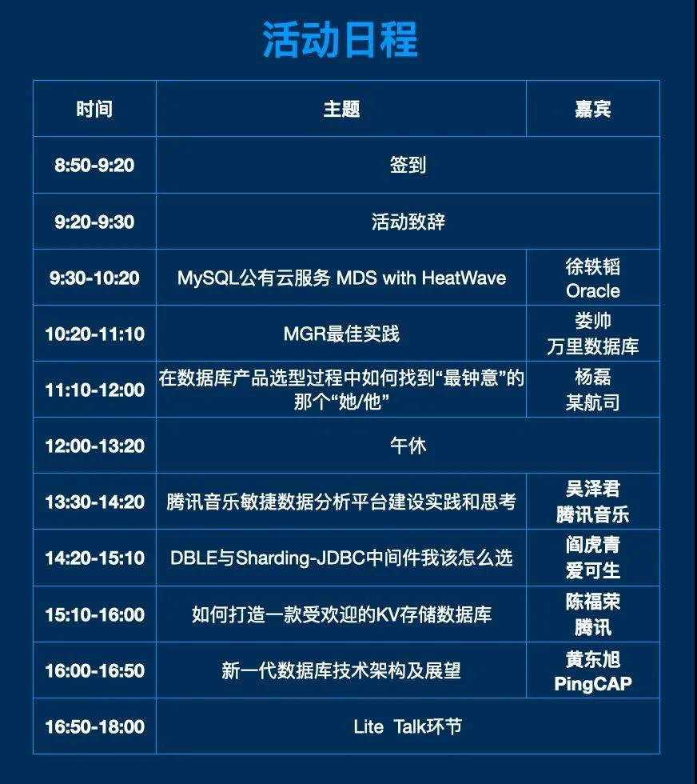

福利 | 3306π技术分享会广州站再度启航 免费门票先到先得！
· 新一代数据库技术论坛-3306π广州站
江南目尽飞鸿远，
隐约罗浮海外山。
曾记盈盈秋水阔，
好花开满荔枝湾。
继3月20日成都举办的首场技术分享会后，以“新一代数据库技术”为主题的3306π技术分享会广州站将于5月22日再度启航，汇聚头部数据库企业技术大咖同台论道，为技术从业者带来一场干货分享盛宴。了解业界前沿技术，交流技术心得，这场技术人必须参加的技术沙龙，一定不能错过~

▲3306π技术分享会（广州站）活动日程
万里数据库作为社区3306π 社区的常驻嘉宾，特派公司CTO娄帅作《MGR最佳实践》的主题分享，向大家倾囊相授公司MGR团队在MGR技术研发及bug修复中的技术实践经验。
时间：2021年5月22日10：20-11：10
地点：广州天河区黄埔大道中322号
粤大金融城国际酒店6楼平安厅
如此干货十足的技术分享会，
小编特意给广大技术童鞋们
准备了10张免费门票名额，
扫描下方二维码报名，
到现场还能找工作人员领取精美定制礼品哦~
扫描二维码，领取免费门票+现场精美礼品
偷偷告诉你，来万里展位现场签到的小伙伴，我们另有好礼相送哦，期待您的参加！
3306π社区技术分享会（广州站）
活动亮点一
MySQL Service = MySQL Group Replication + MySQL HeartWave
MGR优化实践
Cloud Native Database
新一代数据库技术发展展望
构建KV分布存储的最佳实践
关注数据库相关选型
活动亮点二
本次活动邀请了MySQL官方、万里数据库、PingCAP、爱可生等国内优秀数据库厂商，腾讯云、腾讯音乐、某航司等国内优秀数据库技术团队的核心成员也将分享新一代的数据库技术架构及使用经验。
通过本次分享，不仅可以了解数据库当前新技术现状及展望，还能以技术红利赋能业务腾飞、降本增效，提升企业经营效益。
活动亮点三
本次活动覆盖了众多广州互联网、银行证劵、游戏、电商行业等公司技术大佬，他们将在Lite Talk环节自由交流分享；
Lite环节现有分享嘉宾：万里数据库、爱可生、达梦、南方移动、AWS、广州移动、广发银行、微信、虎牙、荔枝等技术专家；
参与Lite Talk可获得主办方提供的精美礼品。
嘉宾 • 介绍
主题一
嘉宾：徐轶韬
分享时间：9:30-10:20
Oracle公司 MySQL 解决方案工程师
为中国及东北亚地区的 MySQL 用户提供 MySQL 相关产品的售前咨询，企业级产品介绍服务以及推广和普及 MySQL 数据库在社区的使用。
分享介绍：
MySQL团队在Oracle公有云上推出了MDS with HeatWave服务。与其他公有云上的MySQL服务不同，MDS with HeatWave提供了分析处理引擎，可同时处理OLTP及OLAP查询，省去了ETL的过程。本次分享将详细介绍相关技术内容。
主题二
嘉宾：娄帅
分享时间：10:20-11:10
万里数据库CTO
专注于分布式数据库研发领域十数年
分享主题：《MGR最佳实践》
1. MGR基本原理
2. MGR consistency level的选择
3. MGR中重要参数
4. 目前MGR的一些不足之处及改进措施
主题三
嘉宾：杨磊
分享时间：11:10-12:00
数据架构师，从事数据专业领域工作近10年
一直致力于数据领域开源化、国产化、新技术研究和应用，对数据生态链中的国产&开源数据库、数据缓存、大数据、分布式存储和计算、云计算等关注密切，并一直活跃于各大论坛。目前是墨天伦社区MVP、OCM联盟核心成员、DBASK技术专家、ACDU （All China DBA Union）核心伙伴。
分享介绍：
在2021年过去的2月份，DB-Engines 数据库流行度排行榜上，开源数据库综合得分已超过商业数据库，且从3月和4月得分来看，有愈加领先之势，开源之势势不可挡。
国内数据库大环境也在发生变化：开源&国产数据库如MySQL、PostgreSQL、TiDB、GaussDb、TDSQL等一路高歌猛进，业界对国产&开源数据库的使用心态也在悄然变化。于各大数据库厂商而言，这是一个“群雄逐鹿”的时代，如何抓住企业用户的迫切需求，在产品选型中脱颖而出，是各家的必争之地。
本次分享将重点交流企业用户在产品选型时的一些出发点和思考点。
主题四
嘉宾：吴泽君
分享时间：13:30-14:20
数据中心负责人
分享介绍：
QQ 音乐和全民 K 歌是腾讯音乐旗下领先的音乐流媒体和社交娱乐产品，为海量用户提供多元化音乐生活体验。面对业务的高速发展，如何通过平台的建设，有效的提升数据分析效率，降低使用数据的技术门槛，满足不同业务大量的数据需求是平台建设的工作重点。
本次将分享我们如何基于ClickHouse构建起PB级的敏捷自助分析平台，实现全民数据分析，数据平民化，围绕基础大数据架构演进、日均万亿级流水同步方案、实时计算性能优化、实时数仓建设等方面展开讨论。
主题五
嘉宾：阎虎青
分享时间：14:20-15:10
爱可生高级软件工程师
负责分布式数据库中间件研发工作
对数据复制、读写分离、分库分表有深刻理解与实践
分享介绍：
通过对比架构、核心的拆分算法、SQL语法支持度、驱动支持度、优化功能等展示dble和Sharding-JDBC的区别，方便大家理解两者不同，做出合理选型。
主题六
嘉宾：陈福荣
分享时间：15:10-16:00
专家工程师
10年数据库内核研发经验，腾讯游戏Tendis负责人，精通mysql和redis数据库，擅长分布式数据库架构设计及内核开发。
分享介绍：
一个受欢迎的KV存储数据库，必然有着以下特征：功能强大、高性能、低成本、易运维、并且开源。Tendis作为腾讯内部大规模使用的Redis分布式数据库，也一直围绕以上特征做设计和优化。此次分享以打造受欢迎的KV存储为切入点，主要介绍Tendis设计和实现的关键点，以及开源社区的运营和发展。
主题七
嘉宾：黄东旭
分享时间：16:00-16:50
PingCAP联合创始人&CTO
分享介绍：
TiDB至今历时6年，经历了不同架构的迭代探究，终于迎来了TiDB5.0及云原生架构。他将结合TiDB 5.0架构&TiDB在云原生数据库技术方面的优势，给大家分享对新一代数据库技术架构的认识及未来展望。